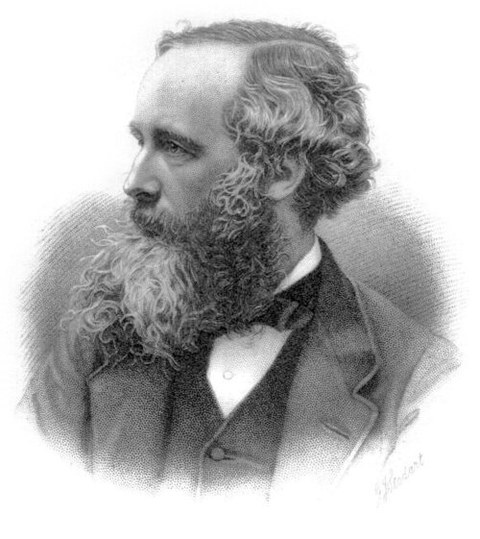
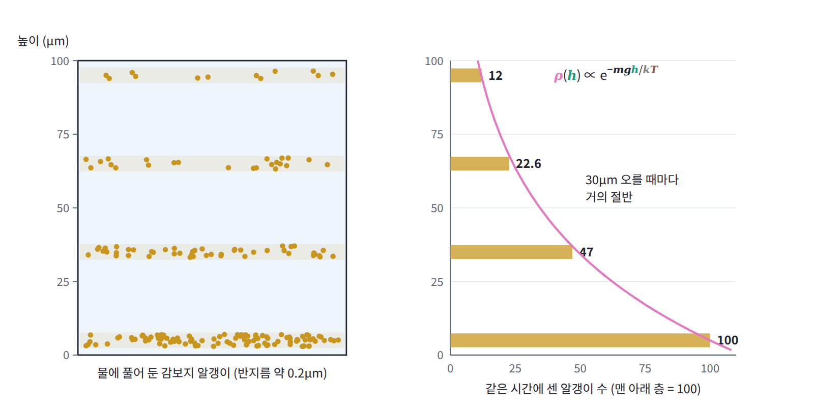
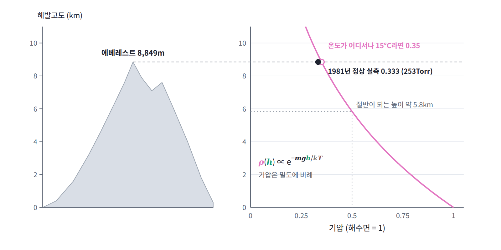
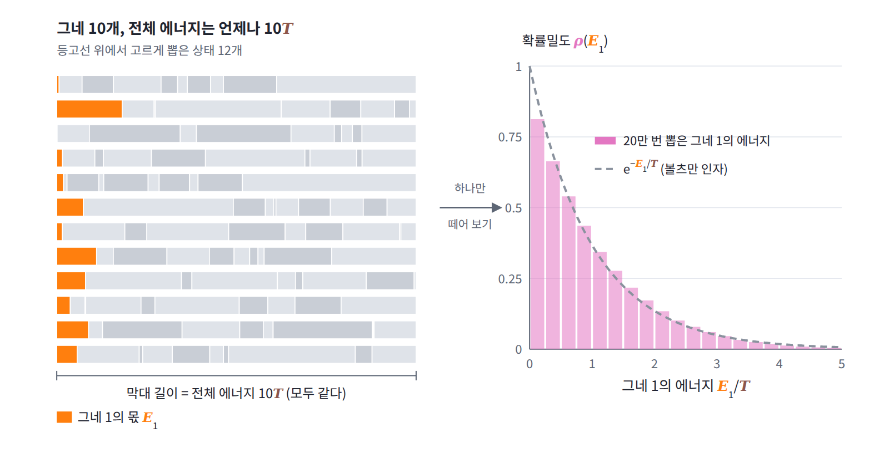
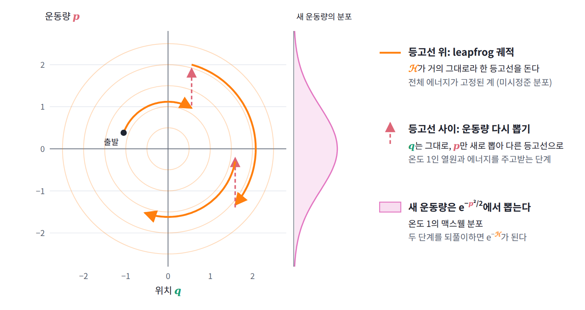

7장 — 볼츠만 분포
이 장의 물음
분류 모델의 마지막 층, 트랜스포머의 어텐션, 언어 모델이 다음 토큰을 고르는 단계에는 모두 같은 함수가 들어 있다. 점수 zᵢ를 받아 e^(zᵢ)에 비례하는 확률을 만드는 softmax다. 점수를 확률로 바꾸는 방법은 이것 말고도 많아서, 점수의 제곱에 비례하게 할 수도 있고 음수를 0으로 자른 뒤 합으로 나눠 줄 수도 있다. 그런데도 거의 모든 모델이 지수함수를 쓰고, 모든 점수에 같은 상수를 더해도 결과가 변하지 않는다는 성질을 당연하게 여긴다. 표본 추출기 HMC가 목표 분포 π(q)를 e^(−U(q))로 적는 것도, 이미지 한 장 한 장에 에너지를 매겨 e^(−E(x))로 확률을 정하는 에너지 기반 모델도 같은 모양이다. 왜 하필 지수함수일까?
이 물음에 답하려면 먼저 물리에서 같은 모양이 어디서 나오는지 따라가 봐야 한다. 이 장은 다음 물음에 차례로 답한다.
- 작은 계가 훨씬 큰 계와 에너지를 주고받을 때, 작은 계가 어떤 상태에 있을지는 무엇이 정할까?
- 점수 전체에 같은 상수를 더해도 확률이 변하지 않는다는 성질은 물리에서 무엇에 해당할까?
- 에너지가 고정된 큰 계에서 작은 부분 하나만 떼어 보면 그 부분의 에너지는 어떻게 퍼져 있을까?
- 기체 분자의 속도와 산 위의 공기는 높이와 온도에 따라 어떻게 퍼질까?
- softmax의 온도, 어텐션 점수를 나누는 √d_k, HMC가 매번 새로 뽑는 운동량은 물리의 말로 무엇일까?
역사: 에너지를 덩어리로 나눠 센 볼츠만
지수 모양의 분포는 기체 분자의 속도에서 처음 나왔고, 원자의 실재를 증명하는 실험을 거쳐 백여 년 뒤 신경망의 출력층에 자리 잡았다. 그 흐름을 연도순으로 정리하면 다음과 같다.
| 연도 | 사람 | 내용 |
|---|---|---|
| 1860 | 맥스웰 | 기체 분자의 각 속도 성분이 정규분포를 따른다는 속도 분포를 발표 |
| 1868 | 볼츠만 | 에너지를 작은 덩어리로 나눠 경우의 수를 세는 방법으로, 중력 같은 외부 힘이 있을 때까지 넓힌 지수 인자를 유도 |
| 1902 | 깁스 | 『통계역학의 기본 원리』에서 이 분포를 「정준 분포」(canonical distribution)라 부르고 통계역학의 중심에 둠 |
| 1908~1909 | 페랭 | 물속 감보지 알갱이의 높이별 개수가 지수적으로 줄어드는 것을 세어 아보가드로 수를 잼 |
| 1985 | 애클리, 힌턴, 세즈노스키 | 뉴런 상태 전체의 확률을 볼츠만 분포로 정한 볼츠만 머신과 그 학습 규칙 |
| 1989~1990 | 브라이들 | 분류 신경망의 지수 정규화 출력층에 「softmax」라는 이름을 붙임 |
| 2024 | 홉필드, 힌턴 | 노벨 물리학상. 선정 위원회는 힌턴이 볼츠만 머신에 통계물리학의 도구를 썼다고 소개 |
맥스웰은 1860년, 기체 분자들이 서로 부딪히며 속도를 주고받은 끝에 각 속도 성분이 정규분포를 따르게 된다는 것을 보였다. 다만 이것은 분자에 외부 힘이 작용하지 않을 때의 이야기였다. 스물네 살의 볼츠만은 1868년 논문에서 이 결과를 중력 같은 외부 힘이 있는 경우로 넓혔는데, 그가 고른 방법은 충돌을 하나하나 따지는 대신 전체 에너지를 크기가 같은 작은 덩어리로 나누고 그 덩어리들을 분자들에게 나눠 주는 방법의 수를 세는 것이었다. 분자 수를 한없이 늘리고 덩어리를 한없이 작게 하는 극한을 취하자, 분자 하나가 에너지 E를 가질 확률이 e^(−E/kT)에 비례한다는 결과가 나왔고 운동에너지만 있을 때에는 맥스웰의 분포로 돌아갔다. 오늘날 볼츠만 인자라 부르는 이 지수 인자는 처음부터 경우의 수를 세는 계산에서 나온 것이다. 이 장의 작은 문제는 볼츠만의 이 계산을 가장 작은 크기로 되풀이한다.

지수 분포를 눈으로 셀 수 있게 만든 사람은 페랭이다. 1908년부터 페랭은 반지름이 0.2마이크로미터쯤인 감보지(열대 나무의 수지로 만든 노란 안료) 알갱이를 물에 풀어 두고, 높이 100마이크로미터의 얇은 용기 안에서 높이별 알갱이 수를 현미경으로 셌다. 높이 5, 35, 65, 95마이크로미터에서 모두 1만 3천 개의 알갱이를 셌더니 개수의 비가 100 : 47 : 22.6 : 12로 나왔다. 30마이크로미터 올라갈 때마다 거의 정확히 절반이 되는 지수 분포다. 공기 분자의 밀도가 절반이 되려면 약 6킬로미터를 올라가야 하는데, 알갱이는 공기 분자보다 훨씬 무거워서 같은 일이 그 2억 분의 1 높이 안에서 일어난 것이다. 페랭은 절반이 되는 높이와 알갱이의 무게로부터 아보가드로 수를 70.5 × 10²²로 얻었는데, 오늘날의 값 60.2 × 10²²와 같은 자릿수다. 원자가 실재한다는 것을 보여 준 이 침강 평형 실험으로 그는 1926년 노벨 물리학상을 받았다.

그로부터 70여 년 뒤 이 분포는 신경망으로 건너왔다. 1985년 애클리, 힌턴, 세즈노스키는 켜지고 꺼지는 뉴런들의 상태 전체에 에너지를 매기고 그 확률을 볼츠만 분포로 정한 신경망을 만들어 볼츠만 머신이라 불렀다. 몇 년 뒤 브라이들은 분류 신경망의 출력을 확률로 읽는 논문에서 지수함수로 정규화하는 출력층에 softmax라는 이름을 붙였다. 가장 큰 값 하나만 고르는 argmax를 부드럽게 만든 것이라는 뜻이다. 2024년 노벨 물리학상은 홉필드와 힌턴에게 돌아갔고, 스웨덴 왕립과학원은 힌턴이 「비슷한 구성 요소 여럿으로 이루어진 계를 다루는 과학인 통계물리학의 도구」를 썼다고 설명했다.
작은 문제: 큰 계 옆의 칸 하나
뜨거운 커피 한 잔을 방에 두면 커피는 식지만 방의 온도는 거의 변하지 않는다. 이렇게 작은 계가 훨씬 큰 계와 에너지를 주고받는 상황에서, 작은 계가 에너지를 얼마나 가질지는 무엇이 정할까? 볼츠만처럼 에너지를 덩어리로 나눠 가장 작은 예부터 직접 세어 보자.
크기가 같은 에너지 덩어리 q개를 칸 N개에 나눠 담는다고 하자. 한 칸에는 덩어리가 몇 개든 들어갈 수 있고 덩어리끼리는 구별하지 않는다. 담는 방법의 수는 별 q개와 칸막이 N − 1개를 한 줄로 늘어놓는 방법의 수와 같으므로 W(N, q) = C(q + N − 1, q)다.
이제 칸 하나로 된 작은 계 A와 칸 N_B개로 된 큰 계 B가 맞닿아 덩어리를 주고받고, 둘이 가진 덩어리의 합은 q개로 고정되어 있다고 하자. A와 B를 합친 전체는 바깥과 에너지를 주고받지 않으므로, 전체의 미시상태는 모두 같은 확률을 갖는다. A가 덩어리 q_A개를 가지는 미시상태의 수는 A 쪽 방법의 수와 B 쪽 방법의 수의 곱인데, A는 칸이 하나뿐이라 q_A개를 담는 방법이 한 가지밖에 없다. 그러므로 A가 덩어리 q_A개를 가질 확률은 B의 경우의 수에만 비례한다.

먼저 B가 작을 때를 보자. B의 칸이 3개이고 덩어리가 모두 6개이면, A가 덩어리 0개부터 6개를 가질 때 B가 담는 방법의 수는 28, 21, 15, 10, 6, 3, 1이고 합은 84다. 각각을 84로 나누면 확률이 되고, 마지막 열에는 덩어리를 하나 더 가질 때 확률이 몇 배가 되는지를 적었다.
| A의 덩어리 q_A | B의 경우의 수 | 확률 | 다음 줄과의 비 |
|---|---|---|---|
| 0 | 28 | 0.333 | 0.75 |
| 1 | 21 | 0.250 | 0.71 |
| 2 | 15 | 0.179 | 0.67 |
| 3 | 10 | 0.119 | 0.60 |
| 4 | 6 | 0.071 | 0.50 |
| 5 | 3 | 0.036 | 0.33 |
| 6 | 1 | 0.012 |
A가 덩어리를 하나도 갖지 않을 확률이 가장 높고, 많이 가질수록 확률이 줄어든다. 하지만 줄어드는 비율은 0.75에서 0.33까지 계속 변한다. 이번에는 B를 크게 키워 칸 1,000개, 덩어리 1,000개로 두고 같은 계산을 하면 다음과 같다.
| A의 덩어리 q_A | 확률 | 다음 줄과의 비 |
|---|---|---|
| 0 | 0.5000 | 0.5003 |
| 1 | 0.2501 | 0.5000 |
| 2 | 0.1251 | 0.4997 |
| 3 | 0.0625 | 0.4995 |
| 4 | 0.0312 | 0.4992 |
| 5 | 0.0156 | 0.4990 |
이번에는 덩어리가 하나 늘 때마다 확률이 거의 정확히 절반이 된다. 비율이 일정하니 확률은 1/2, 1/4, 1/8, …로 줄어드는 기하급수이고, 덩어리 수를 에너지로 보면 에너지에 대한 지수함수다. B가 작을 때는 흔들리던 비율이 B를 키우자 한 값으로 고정되었다. 무엇이 이 비율을 일정하게 만들고, 그 값 1/2은 어디서 왔을까?
패턴: 덩어리 하나마다 같은 비율로 줄어든다
A가 덩어리를 하나 더 가지면 B는 하나를 덜 가진다. 그러므로 표에서 이웃한 두 줄의 확률의 비는 B가 덩어리를 하나 더 내줄 때 B의 경우의 수가 몇 배로 줄어드는지와 같다. B가 가진 덩어리를 m개라 하면 이 비는 W_B(N_B, m − 1)/W_B(N_B, m) = m/(m + N_B − 1)로 간단히 계산된다. B가 작을 때는 A에게 덩어리를 몇 개만 내줘도 m이 6에서 1까지 크게 변하므로, 비도 6/8 = 0.75에서 1/3까지 따라 변한다. B가 클 때는 사정이 다르다. A가 덩어리를 다섯 개 가져가도 B의 m은 1,000에서 995로 바뀔 뿐이고, 비는 1000/1999와 995/1994로 둘 다 1/2에서 소수 셋째 자리까지만 어긋난다.
이 비를 로그로 읽으면 뜻이 더 분명해진다. 비가 1/2이라는 것은 B가 덩어리 하나를 내줄 때마다 ln W_B가 ln 2 = 0.693씩 줄어든다는 뜻이다. 에너지를 조금 더 넣었을 때 ln W가 늘어나는 비율, 곧 ∂ ln W/∂E를 역온도 β라 부르므로, 0.693은 덩어리 하나를 에너지 단위로 잰 B의 역온도다. 그러니 A의 확률은 덩어리 하나마다 e^(−β)배로 줄어들고, 그 β는 A가 아니라 B의 것이다.
덩어리가 아니라 연속적인 에너지로 적어도 같은 논리가 통한다. A가 에너지 E_A를 가지면 B에는 E_전체 − E_A가 남고, A가 그 상태에 있을 확률은 W_B(E_전체 − E_A)에 비례한다. A의 에너지가 B에 비해 아주 작으면 ln W_B를 E_전체 근처에서 한 번만 전개해도 충분하다.
양변에 지수를 취하면 W_B(E_전체 − E_A)는 e^(−βE_A)에 비례하고, 따라서 A의 확률도 e^(−βE_A)에 비례한다. 버린 다음 항은 E_A²에 β가 B의 에너지에 따라 변하는 빠르기를 곱한 것인데, B가 A보다 N_B배 크면 이 빠르기는 대략 1/N_B에 비례해 작아진다. 방에 둔 커피 한 잔이 식는 동안 방의 온도가 거의 변하지 않는 것과 같은 이야기다. 이처럼 에너지를 주고받아도 온도가 변하지 않을 만큼 큰 계를 열원 (온도를 정해 주는 큰 계, heat reservoir)이라 한다.
이 계산은 A가 한 미시상태에 있을 확률을 센 것이다. A에 에너지가 같은 미시상태가 여럿 있으면, 그 하나하나가 똑같이 e^(−βE_A)의 가중치를 받는다. 정리하면 큰 열원과 에너지를 주고받는 계가 에너지 E인 미시상태에 있을 확률은 e^(−βE)에 비례하고, β는 열원의 역온도다. 지수함수는 작은 계의 성질에서 나온 것이 아니라, 에너지를 내줄 때마다 같은 비율로 줄어드는 열원의 경우의 수에서 나왔다.
flowchart LR A["전체 A + B<br/>바깥과 에너지 교환 없음"] --> B["전체의 미시상태는<br/>모두 같은 확률"] B --> C["A가 상태 i일 확률<br/>∝ W_B(E전체 − Eᵢ)"] C --> D["B가 크면<br/>ln W_B ≈ 상수 − βEᵢ"] D --> E["pᵢ ∝ e^(−βEᵢ)<br/>β는 B의 것"] E --> F["Z로 나눔<br/>볼츠만 분포"]
지수함수는 네 번째 칸, 곧 열원의 ln W를 한 번 전개하는 자리에서 들어온다.
정의: 볼츠만 분포
열원과 맞닿은 계가 미시상태 i에 있을 확률은 e^(−βEᵢ)에 비례한다는 것까지 왔다. 하지만 「비례한다」만으로는 아직 확률이 아니다. 모든 상태의 확률을 더하면 1이 되어야 하니, 각 상태의 가중치를 어떤 수로 나눠 주어야 할까? 답은 간단해서, 모든 미시상태의 가중치 e^(−βEᵢ)를 더한 합 Z로 나누면 된다. 정규화하기 전의 이 가중치 e^(−βEᵢ)는 오늘날 볼츠만 인자라 부르는 바로 그 지수 인자이고, 이렇게 정규화해서 얻은, 온도 T인 열원과 맞닿은 계가 미시상태 i에 있을 확률의 분포를 볼츠만 분포 (열원과 맞닿은 계의 상태 분포, Boltzmann distribution)라 한다.
ML에서는 k = 1로 두므로 β = 1/T다. 이 식에서 확률에 실제로 영향을 주는 것은 에너지의 차이뿐이다. 두 상태의 확률 비는 pᵢ/pⱼ = e^(−β(Eᵢ − Eⱼ))라서 에너지가 kT만큼 높은 상태는 e배 드물다.
온도의 양 끝도 이 식에서 바로 읽힌다. T → 0이면 β → ∞라서 에너지가 가장 낮은 상태, 곧 바닥 상태(ground state)를 뺀 모든 볼츠만 인자가 0으로 가고 계는 바닥 상태에만 있게 된다. T → ∞이면 β → 0이라서 모든 볼츠만 인자가 1이 되고, 모든 미시상태가 같은 확률을 갖는다. 볼츠만 분포는 바닥 상태 하나에 몰린 분포와 완전히 고른 분포 사이를 온도 하나로 잇는다.
정의: 분배함수
그렇다면 확률을 맞추려고 나눈 합 Z는 그저 나눗셈에 쓰고 버리는 숫자일까? 먼저 모든 에너지에 같은 상수 c를 더해 보자. 그러면 볼츠만 인자가 모두 e^(−βc)배가 되고 Z도 똑같이 e^(−βc)배가 되므로, 나눈 확률은 그대로다. 산의 높이를 해수면에서 재든 어느 마을을 기준으로 재든 두 봉우리의 높이 차는 같은 것처럼, 에너지에는 절대적인 0이 없고 어디를 기준으로 삼을지는 계산하는 사람이 정한다. 기준점을 옮긴 흔적은 확률에는 남지 않고 Z에만 남는 셈이다. 이처럼 모든 미시상태의 볼츠만 인자를 더한 합 Z를 분배함수 (정규화 합, partition function)라 한다.
Z가 무엇을 담고 있는지는 에너지가 같은 미시상태들을 묶어 보면 더 잘 보인다. 에너지가 E인 미시상태의 개수를 g(E)라 하면 다음과 같다.
에너지 0 또는 ε만 가질 수 있는 입자 세 개로 확인해 보자. x = e^(−βε)로 두면 총에너지가 0, ε, 2ε, 3ε인 미시상태가 각각 1, 3, 3, 1개이므로 Z = 1 + 3x + 3x² + x³ = (1 + x)³이다. 분배함수가 입자 하나의 분배함수 1 + x의 세제곱으로 쪼개지는 것은 입자들이 서로 독립적으로 상태를 고르기 때문이고, 그 덕분에 입자 하나가 들떠 있을 확률은 다른 입자와 상관없이 x/(1 + x) = 1/(1 + e^(βε))로 정해진다. βε = ln 2, 곧 x = 1/2이면 Z = 3.375이고, 총에너지가 0, ε, 2ε, 3ε일 확률은 0.296, 0.444, 0.222, 0.037이다. 미시상태 하나하나로 보면 에너지 0인 상태가 가장 흔하지만, 에너지 값으로 묶으면 ε가 가장 흔하다는 점을 눈여겨 두자.
일반화: 미시정준 분포
지금까지는 작은 계 옆에 열원이 따로 있다고 두었다. 그렇다면 바깥과 에너지를 전혀 주고받지 않아 에너지가 고정된 계는 어떤 분포를 따를까? 그리고 그 안에서 작은 부분 하나만 떼어 보면 어떻게 보일까? 이번에는 덩어리 대신 연속 상태로 옮겨 가 보자. 질량과 각진동수가 1인 그네 N개가 서로 약하게 에너지를 주고받되 바깥과는 에너지를 주고받지 않아, 전체 에너지가 E로 고정되어 있다고 하자. 상태는 위치와 운동량 2N개로 된 위상공간의 점이고, 에너지가 E인 상태들은 그 공간에서 하나의 등고선, 곧 반지름 √(2E)인 구면을 이룬다. 모든 미시상태를 똑같이 대접한다는 등확률 가정을 따르면 상태는 이 등고선 위에 고르게 퍼져 있다. 이렇게 에너지가 고정된 계의 등확률 분포를 미시정준 분포 (에너지 등고선 위의 균등 분포, microcanonical distribution)라 한다.
이제 전체가 아니라 그네 1 하나만 보자. 그네 1의 에너지가 E₁이면 나머지 N − 1개가 E − E₁을 나눠 가져야 하는데, 나머지 그네들이 에너지 E − E₁ 근처에서 가질 수 있는 상태의 부피는 (E − E₁)^(N−2)에 비례한다. 반면 그네 1 자신의 위상 평면에서 에너지가 E₁과 E₁ + dE₁ 사이인 고리의 넓이는 E₁과 상관없이 일정하다. 그래서 그네 1의 에너지 분포는 나머지 그네들, 곧 열원의 경우의 수가 혼자 정하고, 그네 하나당 평균 에너지를 T = E/N으로 두면 다음과 같다.
그네가 둘뿐이면 지수가 0이라 그네 1의 에너지는 0과 E 사이에 고르게 퍼진다. 그런데 그네가 셋만 되어도 E₁이 평균의 두 배를 넘을 확률이 0.111, 열 개면 0.134, 백 개면 0.135가 되어 지수 분포의 값 e^(−2) = 0.135에 금세 다가간다. (1 − x/N)^N이 e^(−x)로 가는 극한이 여기서 볼츠만 인자를 만든 것이다.
이 계산은 에너지가 고정된 계의 「등고선 위의 균등 분포」와 에너지를 주고받는 계의 「e^(−에너지)」가 서로 다투는 두 설명이 아니라는 것을 보여 준다. 바깥과 에너지를 주고받지 않는 전체는 등고선 위에 고르게 퍼져 있고, 그 전체에서 작은 부분 하나만 떼어 보면 나머지 전체가 열원 노릇을 하므로 그 부분은 볼츠만 분포를 따른다. 같은 상황을 전체에서 보느냐 부분에서 보느냐의 차이일 뿐이다.
일반화: 위상공간의 볼츠만 분포
부분 하나가 볼츠만 분포를 따른다면, 위치와 운동량을 함께 가진 연속 상태의 계에서 그 분포는 어떤 모양일까? 연속 상태의 경우의 수는 위상공간의 부피로 세므로, 온도 T인 열원과 맞닿은 계의 볼츠만 분포는 위상공간의 확률밀도로 적힌다. 해밀토니안이 운동에너지와 위치에너지의 합이면 지수함수가 곱으로 쪼개진다.
곱으로 쪼개진다는 것은 위치와 운동량이 서로 독립이라는 뜻이다. 운동량 쪽은 성분마다 분산이 mkT인 정규분포, 속도로 바꾸면 분산이 kT/m인 정규분포이고, 이것이 맥스웰이 1860년에 얻은 속도 분포다. 300K의 질소 분자라면 속도 한 성분의 표준편차가 약 298m/s다. 이 분포에는 위치에너지가 들어 있지 않으므로 분자가 산꼭대기에 있든 골짜기에 있든 같은 온도라면 속도 분포는 같다. 거꾸로 위치 쪽 분포 e^(−βU(q))에는 질량이 들어 있지 않아서, 어디에 있을지는 위치에너지와 온도만으로 정해진다.
일반화: 기압 공식
위치 쪽 분포에 질량이 들어 있지 않다면, 중력 속에 있는 공기 분자나 물속의 알갱이는 높이에 따라 어떻게 퍼질까? 페랭이 센 100 : 47 : 22.6 : 12도 여기서 나올까? 위치에너지가 높이에 비례하는 중력장, U = mgh에서 위치 쪽 분포를 적으면 곧바로 높이에 따른 밀도가 나온다.
밀도는 높이 kT/(mg)를 오를 때마다 1/e로 줄어든다. 이 높이는 입자가 가벼울수록 길어서, 공기 분자에서는 수 킬로미터이고 페랭의 감보지 알갱이에서는 수십 마이크로미터다. 페랭의 네 층 100 : 47 : 22.6 : 12는 이 식을 물속에서 확인한 것이고, 절반이 되는 높이와 알갱이의 질량을 알면 이 식에서 k를, 따라서 아보가드로 수를 거꾸로 구할 수 있다. 기체의 압력은 밀도에 비례하므로 같은 식이 기압이 높이에 따라 줄어드는 기압 공식 (barometric formula)이 된다.

보기: 코드
열원의 경우의 수에서 지수가 나오는 것 확인하기
작은 문제의 두 표를 코드로 다시 만들어 보자. 칸 하나인 계 A와 칸 NB개인 열원 B가 덩어리 q개를 나눠 가질 때 A가 덩어리 qA개를 가질 확률을 정확히 세고, 열원이 덩어리 하나를 내줄 때 ln W가 줄어드는 양을 β로 삼아 지수 분포와 나란히 출력한다.
from math import comb, log, exp
def W(N, q): # 칸 N개에 덩어리 q개를 담는 방법의 수
return comb(q + N - 1, q)
def small_system(NB, q, show=6):
"""칸 1개(계 A)와 칸 NB개(열원 B)가 덩어리 q개를 나눠 가질 때
A가 덩어리 qA개를 가질 확률과, 이웃한 확률의 비"""
w = [W(NB, q - qA) for qA in range(q + 1)] # A 쪽은 담는 방법이 1가지
Z = sum(w)
beta = log(W(NB, q)) - log(W(NB, q - 1)) # 열원이 덩어리 하나를 내줄 때 ln W 감소량
print(f"NB={NB}, q={q}, 열원의 β = {beta:.4f}")
for qA in range(show):
print(qA, round(w[qA] / Z, 4), round(w[qA + 1] / w[qA], 4),
round(exp(-beta * qA) * (1 - exp(-beta)), 4)) # 끝 열: 지수 분포
small_system(3, 6)
small_system(1000, 1000)
# NB=3, q=6, 열원의 β = 0.2877
# 0 0.3333 0.75 0.25
# 1 0.25 0.7143 0.1875
# 2 0.1786 0.6667 0.1406
# 3 0.119 0.6 0.1055
# 4 0.0714 0.5 0.0791
# 5 0.0357 0.3333 0.0593
# NB=1000, q=1000, 열원의 β = 0.6926
# 0 0.5 0.5003 0.4997
# 1 0.2501 0.5 0.25
# 2 0.1251 0.4997 0.1251
# 3 0.0625 0.4995 0.0626
# 4 0.0312 0.4992 0.0313
# 5 0.0156 0.499 0.0157
열원이 칸 3개뿐이면 정확한 확률(둘째 열)과 지수 분포(넷째 열)가 0.333 대 0.25로 크게 어긋난다. 열원이 가진 덩어리가 6개밖에 없어서 A에게 몇 개만 내줘도 열원의 β가 달라지기 때문이다. 열원을 칸 1,000개로 키우면 β는 ln 2 = 0.6931에 가까운 0.6926이 되고, 두 열은 소수 넷째 자리에서만 다르다. NB와 q를 바꿔 가며 돌려 보면, q/NB를 키울수록 β가 작아지고(열원이 뜨거워지고) A가 덩어리를 여러 개 가질 확률이 늘어나는 것도 볼 수 있다.
그네 N개 가운데 하나의 에너지
이번에는 연속 상태다. 전체 에너지가 정확히 E인 그네 N개의 상태를 등고선 위에서 고르게 뽑고, 그중 그네 하나의 에너지만 들여다본다. 위상공간 2N차원에서 정규분포 벡터를 뽑아 길이만 맞추면 구면 위의 균등한 점이 된다는 사실을 쓴다.
import numpy as np
rng = np.random.default_rng(0)
def one_swing_energy(N, E, n_samples=200_000):
"""그네 N개(위상공간 2N차원)의 전체 에너지가 정확히 E인 상태를
등고선(구면) 위에서 고르게 뽑고, 첫 번째 그네의 에너지를 돌려준다."""
x = rng.standard_normal((n_samples, 2 * N)) # 방향만 쓸 무작위 벡터
x *= np.sqrt(2 * E) / np.linalg.norm(x, axis=1, keepdims=True) # ‖x‖²/2 = E로 맞춤
return 0.5 * (x[:, 0]**2 + x[:, 1]**2) # 그네 1의 q²/2 + p²/2
for N in (2, 3, 10, 100):
e1 = one_swing_energy(N, E=N) # 그네 하나당 평균 에너지 1
print(f"N={N:3d} 평균 {e1.mean():.3f} "
f"P(e1>1) {np.mean(e1 > 1):.4f} P(e1>2) {np.mean(e1 > 2):.4f}")
print("e^(-1) =", round(np.exp(-1), 4), " e^(-2) =", round(np.exp(-2), 4))
# N= 2 평균 0.999 P(e1>1) 0.4994 P(e1>2) 0.0000
# N= 3 평균 0.998 P(e1>1) 0.4431 P(e1>2) 0.1109
# N= 10 평균 0.999 P(e1>1) 0.3869 P(e1>2) 0.1337
# N=100 평균 1.000 P(e1>1) 0.3694 P(e1>2) 0.1351
# e^(-1) = 0.3679 e^(-2) = 0.1353
그네가 둘일 때 그네 1의 에너지는 0과 2 사이에 고르게 퍼져서, 평균 1을 넘을 확률이 정확히 절반이고 2를 넘는 일은 없다. 그네 수를 늘리면 두 확률이 e^(−1)과 e^(−2)로 다가가고, 100개에서는 소수 셋째 자리까지 맞는다. 정규분포는 방향을 고르게 뽑는 데만 썼고 길이는 강제로 맞췄으니, 에너지에 지수 모양을 넣은 곳은 코드 어디에도 없다는 점에 주목하자. 전체를 등고선 위에 고르게 뿌렸을 뿐인데, 부분 하나를 보니 볼츠만 분포가 나왔다.

ML에서 만나는 곳
볼츠만 분포는 ML의 세 곳에서 모양 그대로 쓰인다. 점수를 확률로 바꾸는 softmax와 그 변형들, 목표 분포를 물리계로 번역하는 HMC, 그리고 에너지 함수 자체를 배우는 에너지 기반 모델이다.
softmax와 어텐션: 로짓은 음의 에너지다 (움직이는 것: 분포)
온도 τ인 softmax pᵢ = e^(zᵢ/τ)/Σⱼe^(zⱼ/τ)는 에너지를 Eᵢ = −zᵢ, 역온도를 β = 1/τ로 둔 볼츠만 분포다. 물리에서는 에너지가 낮을수록 선호되고 ML에서는 로짓이 높을수록 선호되므로 마이너스가 하나 붙는다. 두 언어를 나란히 놓으면 다음과 같다.
| 볼츠만 분포 | softmax |
|---|---|
| 미시상태 i | 후보 i (클래스, 토큰, 키) |
| 에너지 Eᵢ | 로짓에 마이너스를 붙인 −zᵢ |
| 역온도 β | 1/τ |
| 분배함수 Z | Σ e^(zᵢ/τ) |
| ln Z | logsumexp(z/τ) |
| 에너지 기준점 | 로짓 전체에 더한 상수 |
| 바닥 상태 (T → 0) | argmax, greedy 디코딩 |
| T → ∞ | 균등 분포 |
이렇게 번역하면 softmax를 다룰 때 몸에 밴 습관들이 물리의 성질로 읽힌다. 로짓 전체에 상수를 더해도 결과가 같은 것은 에너지의 기준점을 옮긴 것이고, overflow를 막으려고 가장 큰 로짓을 빼는 것은 바닥 상태의 에너지를 0으로 맞춰 모든 볼츠만 인자를 1 이하로 만드는 것이다.
트랜스포머의 어텐션 가중치도 쿼리와 키의 내적을 로짓으로 쓰는 softmax, 곧 내적에 마이너스를 붙인 것을 에너지로 하는 볼츠만 분포다. Vaswani 외(2017)는 내적을 √d_k로 나누면서 그 이유를 이렇게 적었다. 「d_k가 크면 내적의 크기가 커져서 softmax를 기울기가 아주 작은 영역으로 밀어 넣는다고 짐작한다.」 각주에는 쿼리와 키의 성분이 평균 0, 분산 1인 독립 확률변수이면 내적의 분산이 d_k라는 설명이 붙어 있다. d_k = 64, 키 16개로 실험해 보면 내적의 표준편차는 8.02이고, 나누지 않은 softmax는 가장 큰 가중치가 평균 0.845, 유효 후보 수 e^H가 1.64로 거의 한 키에 몰린다. √d_k로 나누면 가장 큰 가중치는 0.247, 유효 후보 수는 10.74가 된다. 이 장을 마친 독자는 이 문장을 「에너지 차이가 kT보다 훨씬 크면 볼츠만 분포는 바닥 상태 하나로 얼어붙고, 얼어붙은 분포는 에너지를 조금 바꿔도 거의 변하지 않아 기울기가 사라진다. √d_k로 나누는 것은 에너지가 퍼진 폭에 맞춰 온도를 √d_k로 올리는 일이다」로 읽게 된다.
강화학습에서는 행동 가치 Q(s, a)를 음의 에너지로 쓰는 softmax 정책 π(a|s) ∝ e^(Q(s,a)/τ)를 볼츠만 탐색(Boltzmann exploration)이라 부른다. 온도가 높으면 가치가 조금 낮은 행동도 자주 시험하고, 온도를 낮추면 가장 좋은 행동에 모인다. LLM의 RLHF처럼 보상을 높이면서 기준 정책에서 KL로 멀어지지 않게 하는 목적 함수의 최적 정책도 같은 모양이다.
에너지 값별로 적은 볼츠만 분포 g(E)e^(−βE)/Z와 나란히 놓으면, 기준 정책 π_ref가 축퇴도 g(E)의 자리에 있다. 에너지가 같아도 미시상태가 많은 에너지 값이 더 자주 나오듯, 보상이 같아도 기준 모델이 원래 자주 내놓던 응답이 더 자주 뽑힌다.
HMC 다시 읽기: 등고선 위와 등고선 사이 (움직이는 것: 인위적 물리계)
HMC가 목표 분포를 위치에너지 U(q) = −ln π(q)로 옮기는 것은 π를 온도 1의 볼츠만 분포로 읽는 일이다. 사후분포처럼 정규화 상수를 모르는 π라도 괜찮은 이유가 여기서 보인다. 정규화 상수는 U에 더해지는 상수, 곧 에너지의 기준점일 뿐이고, HMC는 수락 확률 e^(−Δℋ)에서 에너지의 차이만 쓴다. 운동량을 표준정규분포에서 뽑는 것은 질량 1인 입자의 운동량을 온도 1의 맥스웰 분포에서 뽑는 것이고, 결합 분포 e^(−ℋ)가 위치와 운동량의 곱으로 쪼개지므로 운동량을 버리면 π가 남는다.
이제 한 번의 갱신을 열원의 언어로 읽을 수 있다. leapfrog 궤적은 에너지를 거의 보존하므로 한 등고선 위를 돌고, 운동량을 새로 뽑는 순간 계는 온도 1인 열원과 에너지를 주고받아 다른 등고선으로 옮겨 간다. 베탄코트(Betancourt, 2017)의 HMC 해설은 결합 분포를 등고선 위의 미시정준 분포와 에너지 자체의 분포로 나눈 뒤 이렇게 적었다. 「해밀턴 마르코프 연쇄 전체가 두 단계로 나뉜다. 개별 등고선의 결정론적 탐색과, 등고선 사이의 확률적 탐색이다.」 이 장을 마친 독자는 이것을 「궤적은 전체 에너지가 고정된 계의 균등 분포를 돌아다니고, 운동량 다시 뽑기는 열원과 맞닿아 에너지를 볼츠만 분포대로 바꾼다」로 읽는다.

에너지 기반 모델 (움직이는 것: 에너지 함수의 매개변수)
에너지 기반 모델 (에너지 함수를 배워 볼츠만 분포로 확률을 정하는 모델, energy-based model)은 입력 x마다 신경망이 에너지 E_θ(x)를 매기고 확률을 온도 1의 볼츠만 분포로 정한다.
데이터의 음의 로그우도는 ⟨E_θ⟩_데이터 + ln Z(θ)이고, 이것을 매개변수로 미분하면 두 항이 나온다. 둘째 항은 ln Z를 미분한 것인데, 볼츠만 인자의 합의 로그를 미분하면 각 상태의 미분을 볼츠만 확률로 평균한 값이 나오므로 모델 분포에 대한 평균이 된다.
경사하강으로 이 기울기를 빼 주면 데이터가 있는 곳의 에너지는 내려가고 모델이 지금 샘플을 내놓는 곳의 에너지는 올라가며, 두 평균이 같아지면 학습이 멈춘다. 볼츠만 머신의 학습 규칙이 이 모양이었고, softmax 분류기의 로짓 기울기 「예측 확률 − 정답」도 클래스 몇 개에 대해 같은 식을 쓴 것이다. 분류기는 클래스가 몇 개뿐이라 모델 쪽 평균을 정확히 계산할 수 있지만, 이미지 전체에 에너지를 매기는 모델은 Z도 모델 쪽 평균도 계산할 수 없다. 그래서 모델에서 샘플을 뽑아 평균을 어림하는데, Du와 Mordatch(2019)처럼 에너지의 기울기를 따라 움직이는 랑주뱅 동역학이나 HMC 같은 표본 추출기가 그 일을 맡는다.
Grathwohl 외(2020)의 논문 제목은 「Your Classifier is Secretly an Energy Based Model and You Should Treat it Like One」이다. 분류기의 로짓으로 입력과 라벨 쌍의 에너지를 E(x, y) = −z_y(x)로 정하면 분류기가 내놓는 p(y|x)는 x를 고정한 볼츠만 분포이고, 라벨을 합쳐 없애면 p(x)가 Σ_y e^(z_y(x)), 곧 분류기가 매번 계산하고 버리던 분배함수 Z(x)에 비례한다. 이 장을 마친 독자는 이 제목을 「softmax 분류기는 이미 (x, y) 위의 볼츠만 분포인데 조건부 분포만 쓰고 있었고, 정규화 상수로 버린 Z(x)에 입력 x의 분포가 들어 있다」로 읽게 된다.
대화 연습
선생님의 수업. 김민준(학부 3학년, ML 강의 몇 개 수강)과 이서연(수학과 3학년)이 문제를 풀고, 선생님이 틀린 곳을 짚는다.
문제 1. softmax를 볼츠만 분포로 번역하기
로짓 z = (2, 1, 0)을 온도 τ = 0.5인 softmax로 확률로 바꾼다. 이것을 볼츠만 분포로 읽을 때 각 후보의 에너지, 역온도 β, 분배함수 Z와 ln Z는 무엇인가? 또 온도를 에너지 안에 흡수해 처음부터 E′ = −z/τ 하나로 쓰면 무엇을 잃는가?

김민준쉽네요. 에너지는 로짓 그대로 E = (2, 1, 0)이고 β = τ = 0.5요. 그럼 볼츠만 인자는 (e^(−1), e^(−0.5), 1)이고 정규화하면 (0.186, 0.307, 0.506)… 어? 로짓이 0인 후보가 제일 높아요.

이서연두 군데가 틀렸어. 물리는 에너지가 낮을수록 좋고 로짓은 높을수록 좋으니까 E = −z = (−2, −1, 0)이야. 그리고 τ는 온도고 β는 역온도니까 β = 1/τ = 2.

김민준부호랑 역수를 둘 다 뒤집었네요. 다시 하면 볼츠만 인자는 (e⁴, e², 1) = (54.60, 7.39, 1), Z = 62.99, ln Z = 4.143이에요. 확률은 (0.867, 0.117, 0.016)이고, torch.logsumexp(z / 0.5)를 찍어 봐도 4.143이 나와요.

선생님맞아요. 로짓이 가장 큰 후보가 바닥 상태고, τ → 0이 절대영도예요. 이제 둘째 질문이에요. 확률에는 어차피 βE = −z/τ만 들어가니까, 처음부터 E′ = −z/τ라는 에너지 하나로 쓰면 안 될까요?

이서연수학적으로는 같은 분포예요. 오히려 z와 τ를 동시에 두 배로 해도 분포가 같으니까, 샘플만 보고는 둘을 구별할 수도 없어요. 굳이 나눠 둘 이유가 없어 보이는데요.

선생님구별할 수 없다는 것까지 정확해요. 그런데 이 장에서 β는 어디서 왔죠?

이서연열원이요. E는 작은 계의 상태마다 정해진 값이고, β는 맞닿은 열원의 ln W가 에너지에 따라 줄어드는 비율이었어요. …아, 둘은 출처가 달라요. 같은 계를 다른 열원에 붙이면 E는 그대로고 β만 바뀌어요.

선생님그래서 나눠 두면 「같은 모델을 다른 조건에서 쓴다」는 말을 할 수 있어요. 학습이 끝난 분류기의 로짓은 그대로 두고 검증 데이터로 τ 하나만 맞춰 과신을 줄이는 온도 보정(temperature scaling, Guo 외 2017)이 그 예예요. 정답률은 그대로이고 확신의 정도만 바뀌죠. 흡수해 버리면 이런 조절을 하려고 모델을 다시 학습해야 해요.

김민준언어 모델도 체크포인트는 그대로 두고 generate()의 temperature 인자만 바꾸잖아요. 에너지는 체크포인트에, 온도는 함수 인자에 들어 있었던 거네요.

이서연온도가 로짓과 nat 사이의 환율이라는 얘기를 들었을 때는 그냥 눈금 같았는데, 환율을 정하는 게 바깥의 열원이라서 따로 떼어 둘 수 있는 거였어.
문제 2. 산 위의 공기
공기 분자 하나의 질량은 약 4.81 × 10⁻²⁶kg(분자량 28.97)이다. 기온이 어디서나 15°C(288K)라고 가정하고, 공기 밀도가 1/e로 줄어드는 높이와 에베레스트 정상(해발 8,849m)의 기압을 해수면과 비교하라. 높이를 해발 1,000m인 마을을 기준으로 재면 답이 바뀌는가?
김민준위치에너지가 mgh니까 밀도는 e^(−mgh/kT)이고, 1/e가 되는 높이는 kT/(mg)예요. 공기는 1몰에 29g이니까 m = 0.029를 넣으면… 1.4 × 10⁻²⁰m요. 원자 하나보다도 작은데요?
선생님단위부터 봐요. k는 무엇 하나에 대한 상수죠? 그리고 m은 무엇의 질량이에요?
김민준k는 분자 하나, m은 1몰이요… 아보가드로수로 나눠야 해요. m = 4.81 × 10⁻²⁶kg을 넣으면 (1.38 × 10⁻²³ × 288)/(4.81 × 10⁻²⁶ × 9.81) ≈ 8,420m, 8.4km예요. 에베레스트는 e^(−8849/8420) = e^(−1.05) ≈ 0.35, 해수면의 3분의 1쯤이고요.
이서연기준을 바꾸는 건 저는 답이 바뀐다고 봐요. 마을을 0으로 두면 해수면의 에너지가 음수가 되고, 볼츠만 인자가 전부 달라지잖아요.

선생님전부 달라지죠. 얼마씩 달라지나요?
이서연높이를 h − 1000으로 쓰면 e^(−mg(h − 1000)/kT) = e^(1000mg/kT) × e^(−mgh/kT)… 모든 높이에 똑같은 인자가 곱해져요. Z에도 같은 인자가 곱해지니까 나누면 사라지고요. 비율은 안 바뀌네요.
선생님해발고도를 어디서 재든 두 봉우리의 높이 차가 같은 것과 같아요. 확률의 비는 에너지의 차만 보니까요.

김민준상대평가랑 똑같네요. 조교님이 모두에게 10점씩 더 줘도 등수는 그대로니까요.

이서연그런데 선생님, 산 위로 가면 추워지잖아요. 기온이 어디서나 같다는 가정은 틀렸는데 0.35를 믿어도 돼요?
선생님좋은 질문이에요. 1981년 원정대가 정상에서 잰 기압은 253Torr, 해수면의 0.333배였어요. 위로 갈수록 기온이 떨어지면 공기가 더 빨리 줄어들어서 실제 값이 조금 더 작은 거예요. 가정이 조금 어긋나도 크게 틀리지 않는 근사라서 쓸모가 있는 거고요.
문제 3. 라벨 세 개의 sigmoid
사진 한 장에 「바다」「배」「사람」 세 라벨을 독립적으로 붙이는 분류기가 로짓 (2, 0, −1)을 내놓았다. (가) 각 라벨이 붙을 확률, (나) 라벨 조합 (바다 O, 배 X, 사람 O)의 확률을 구하라. (다) 여덟 가지 라벨 조합 전체에 softmax를 쓰는 분류기와는 언제 같은가?
김민준sigmoid 세 개면 0.881, 0.5, 0.269인데 합이 1.650이에요. 확률이니까 1.650으로 나눠서 (0.534, 0.303, 0.163)으로 맞춰야죠.

이서연민준아, 그건 셋 중 하나만 고를 때 얘기야. 이 분류기는 라벨마다 붙는지 안 붙는지를 따로 정하는 거라서 합이 1일 이유가 없어. 바다 사진에 배랑 사람이 같이 있을 수도 있잖아.
선생님볼츠만 분포로 읽어 봐요. 라벨 하나는 「붙음」과 「안 붙음」 두 상태를 가진 2준위계예요. 붙음의 에너지를 −z, 안 붙음의 에너지를 0으로 두면요?

김민준붙음은 e^z, 안 붙음은 1이니까 붙을 확률은 e^z/(1 + e^z)… 이게 sigmoid네요! 라벨마다 이미 따로 정규화돼 있으니 다시 나누면 안 되는 거고요. (나)는 0.881 × (1 − 0.5) × 0.269 = 0.118이에요.

이서연(다)는 여덟 조합 전체를 하나의 계로 보면 돼요. 조합 s = (s₁, s₂, s₃)의 에너지를 E(s) = −(2s₁ + 0·s₂ − s₃)로 두면 Z는 여덟 항의 합인데, (1 + e²)(1 + e⁰)(1 + e⁻¹) = 22.95로 인수분해돼요. (바다, 사람) 조합은 e^(2 − 1)/22.95 = 0.118. 같네요! 그럼 두 분류기는 항상 같은 거죠?

김민준이거 입자 세 개 가중치 합이 (1 + x)³으로 쪼개지던 거랑 똑같다. 입자가 라벨로 바뀐 것뿐이야.
선생님그때 인수분해가 된 이유가 뭐였죠?
이서연입자들이 서로 독립이라서, 곧 에너지가 입자별 에너지의 합이라서요… 아, 항상은 아니네요. 「바다」와 「배」가 같이 붙을 때 에너지를 더 낮추는 항 −J s₁s₂를 넣으면 곱으로 안 쪼개져요.
선생님그래요. 여덟 조합의 softmax는 그런 상호작용 항을 배울 수 있고, 라벨별 sigmoid는 에너지가 라벨별 합으로 쪼개진다고 미리 가정한 모델이에요. 독립인 입자들의 Z가 곱이 되는 것과 똑같은 이유로 독립인 라벨들의 확률이 곱이 되는 거예요.
문제 4. 표준정규분포의 분배함수
d차원 표준정규분포 N(0, I)를 에너지 E(x) = ‖x‖²/2, 온도 T = 1인 볼츠만 분포로 보자. (가) 분배함수 Z와 원점의 확률밀도를 구하라. (나) 온도를 T로 바꾸면 분포는 어떻게 되는가?

김민준원점은 에너지가 0이니까 볼츠만 인자가 e⁰ = 1이고, 그러니까 원점의 밀도는 1이에요. 정규분포는 원래 정규화돼 있으니까 Z = 1이고요.
이서연1차원 표준정규분포의 원점 밀도는 0.399야. 교과서 그림에서 봉우리가 0.4 근처잖아. 1이 아니야.
선생님민준 학생은 볼츠만 인자를 확률로 읽었어요. 선거에 빗대 볼게요. 후보마다 받은 표 수를 알아도 총 투표수를 모르면 득표율은 말할 수 없죠. 볼츠만 인자는 득표수, Z는 총 투표수, 확률은 득표율이에요.
김민준그럼 1차원에서 Z = ∫e^(−x²/2)dx = √(2π) ≈ 2.507이고, 원점 밀도는 1/2.507 = 0.399네요. d차원은 좌표마다 곱이 되니까 Z = (2π)^(d/2)이고, d = 100이면 8.1 × 10³⁹, ln Z = 91.9예요. 1이랑은 거리가 한참 머네요.

이서연「정규분포는 이미 정규화돼 있다」는 건 앞에 1/√(2π)가 붙어 있을 때 얘기였고, 그 1/√(2π)가 바로 1/Z였던 거구나.
선생님이제 (나)예요. 온도가 T면요?
이서연볼츠만 인자가 e^(−‖x‖²/(2T))니까 좌표마다 분산이 T인 정규분포, 곧 N(0, T·I)이고 Z = (2πT)^(d/2)예요. 분산이 곧 온도네요.

김민준생성 모델 과제에서 샘플이 지저분하면 노이즈에 0.7을 곱해서 뽑으라고 했는데, 그게 분산을 0.49로, 곧 온도를 0.49로 낮춘 거였네요. 그런데 선생님, 이상한 게 있어요. 볼츠만 분포에서 확률이 제일 높은 상태는 에너지가 제일 낮은 원점이잖아요. 그런데 고차원 가우시안 샘플은 원점 근처가 아니라 반지름 √d 껍질에 있었어요. 에너지로 치면 거의 d/2요.
선생님좋은 질문이에요. 그 답은 에너지만 봐서는 나오지 않아요. 지금은 질문으로 남겨 둘게요.
문제 5. 정규화 상수를 버린 손실
실수 x 위의 에너지 기반 모델 E_θ(x) = θx²/2 (θ > 0)를 데이터 {−2, −1, 1, 2}로 학습한다. (가) 민준은 「Z는 정규화 상수니까 빼도 된다」며 데이터의 평균 에너지만 경사하강으로 줄였다. 어떻게 되는가? (나) 음의 로그우도를 θ의 함수로 쓰고 최적의 θ를 구하라.
김민준볼츠만 분포니까 확률을 높이려면 데이터의 에너지를 낮추면 되죠. 데이터의 x²의 평균이 2.5라서 평균 에너지는 1.25θ이고, θ로 미분하면 항상 1.25예요. θ = 1에서 학습률 0.1로 열 걸음 가면 θ = −0.25, 손실은 −0.31로 계속 내려가요. 잘 되는데요?
이서연θ가 음수면 e^(−θx²/2) = e^(0.125x²)이라서 x가 커질수록 가중치가 커져. 적분하면 무한대라서 확률분포가 아니야.
김민준어… θ가 0을 지날 때부터 이미 이상했겠네요. θ = 0이면 모든 x의 에너지가 0이라 평평한데, 실수 전체에 평평하면 정규화가 안 되니까요.
선생님에너지를 낮추는 것 자체는 맞는 방향이에요. 그런데 데이터가 있는 곳만이 아니라 모든 곳의 에너지를 함께 낮추면 확률은 하나도 안 올라가요. 그걸 붙잡아 주는 게 Z예요. 이 모델의 Z는요?
이서연∫e^(−θx²/2)dx = √(2π/θ)예요. θ가 들어 있어요. Z는 상수가 아니라 θ의 함수였네요. 음의 로그우도는 1.25θ + ½ ln(2π) − ½ ln θ이고, 미분하면 1.25 − 1/(2θ) = 0에서 θ = 0.4예요. 모델의 분산 1/θ = 2.5가 데이터의 x² 평균과 같아지는 곳이에요.

선생님방금 미분한 식을 다르게 읽어 볼까요? 1/(2θ)는 무엇이죠?
이서연모델 분포에서 x²/2의 평균이요. 분산이 1/θ니까요. 그러니까 기울기는 ⟨x²/2⟩_데이터 − ⟨x²/2⟩_모델이고, 둘이 같아질 때 멈춰요.
선생님그게 에너지 기반 모델의 학습 규칙이에요. 데이터에서는 에너지를 내리고, 모델이 뽑는 샘플에서는 올려요. 민준 학생은 뒤의 항을 빼먹은 거고요.

김민준그럼 분류기 학습도 이거예요? cross-entropy를 로짓으로 미분하면 p − y잖아요. 에너지 −z로 미분하면 y − p고, 경사하강으로 빼 주면 정답 클래스의 에너지는 내려가고 모든 클래스의 에너지가 모델 확률 p만큼씩 올라가요. 제가 외우던 p − y가 「데이터 − 모델」이었네요.
이서연너 그거 외우기만 하고 이유는 몰랐지?
김민준과제 채점은 코드만 보잖아.
문제 6. 운동량을 다시 뽑지 않는 HMC
목표 분포가 1차원 표준정규분포(U(q) = q²/2)이다. 민준은 계산을 아끼려고 처음에 한 번만 운동량을 뽑고(q = 1, p = 0.5), 그 뒤로는 운동량을 다시 뽑지 않은 채 leapfrog 궤적(걸음 크기 0.15)을 계속 따라가며 열 걸음마다 q를 기록했다. (가) 기록된 q는 표준정규분포를 따르는가? (나) 서연은 더 멀리 가려고 운동량을 N(0, 4)에서 뽑되, ℋ는 그대로 q²/2 + p²/2로 계산해 수락 여부를 정했다. q의 분산은 얼마가 되는가?
김민준따를 것 같아요. 해밀턴 흐름은 e^(−ℋ)를 바꾸지 않으니까요. 목표 분포를 흔들지 않는 흐름을 따라가며 기록했으니 그대로 표본이죠. 수락 확률도 거의 1이고, 운동량 뽑는 계산도 아꼈고요.
이서연돌려 봤는데 이상해. 2만 개를 기록했는데 |q|가 1.12를 한 번도 안 넘어. 표준정규분포면 1.12를 넘는 게 26%는 돼야 하는데. 분산도 1이 아니라 0.626이야.
김민준어? 버그인가… 코드는 맞는데.
선생님처음 상태에서 ℋ를 계산해 봐요.
김민준0.5 + 0.125 = 0.625요. 그리고 ℋ는 보존되니까… 아, 상태는 ℋ = 0.625인 원 위만 돌아요. 반지름이 √1.25 = 1.118이라 그 밖으로는 절대 못 나가요.
이서연분산이 0.626인 것도 설명돼. 원 위에서는 q²/2와 p²/2의 시간 평균이 같아서 각각 ℋ/2니까 ⟨q²⟩ = ℋ = 0.625야. 게다가 원을 도는 동안 q가 오래 머무는 곳은 속도가 느린 양 끝 ±1.118 근처야. 봉우리가 가운데가 아니라 양 끝에 있는 분포라서 정규분포랑 정반대네.
선생님민준 학생이 말한 「흐름이 e^(−ℋ)를 바꾸지 않는다」는 맞아요. 그런데 그건 처음부터 e^(−ℋ)로 퍼져 있는 상태들 전체의 이야기고, 궤적 하나는 등고선 하나에 갇혀 있어요. 민준 학생이 뽑은 건 그 등고선 위의 미시정준 분포예요. e^(−ℋ)는 여러 등고선을 볼츠만 가중치로 섞은 것이라서, 등고선 사이를 옮겨 다니는 단계가 따로 있어야 해요.
이서연그게 운동량을 다시 뽑는 단계군요. 새 운동량을 뽑으면 ℋ가 바뀌니까요. 계에 에너지를 넣었다 뺐다 하는 열원 노릇이에요.
선생님그래요. 그럼 그 열원의 온도는 얼마죠?

김민준운동량을 N(0, 1)에서 뽑는 건 e^(−p²/2)에서 뽑는 거니까, 운동에너지 p²/2의 볼츠만 분포를 온도 1로 뽑은 거예요. 목표도 e^(−U)니까 온도 1이고, 맞아떨어지네요. 그럼 (나)처럼 N(0, 4)에서 뽑으면 더 멀리 가니까 더 좋은 거 아니에요?

이서연나도 그렇게 생각하고 돌렸는데… 걸음 크기 0.15, 열 걸음으로 20만 번 갱신했더니 q의 분산이 3.95야. 수락률은 99%인데. 1이 나와야 하는데 거의 4가 나왔어.
선생님문제 4를 떠올려 봐요. 분산이 4인 정규분포는 어떤 온도의 볼츠만 분포였죠?

이서연e^(−p²/(2·4))니까 온도 4요. 아… 운동량은 온도 4인 열원에서 뽑고, 수락 규칙은 온도 1로 계산했어요. 수락률이 거의 1이라 수락 단계는 사실상 아무 일도 안 했고, 위치는 온도 4인 열원에 맞닿아 있었던 거예요. 걸음 크기를 0.05로 줄이고 걸음 수를 서른으로 늘렸더니 분산이 3.99까지 가요. 위치의 분산이 운동량을 뽑은 온도를 그대로 따라가요.

선생님두 사람이 한 가지씩 짚었어요. 그리고 운동량 분포와 운동에너지는 따로 정할 수 있는 게 아니에요. U = −ln π로 위치에너지를 정했듯이, 운동에너지도 K = −ln(운동량 분포)로 정해야 해요. N(0, 4)에서 뽑고 싶으면 K = p²/8, 곧 질량을 4로 두면 돼요.
김민준K = p²/8로 바꿔서 같은 설정으로 돌렸더니 분산 0.99요. 제자리로 왔어요. 열원이 두 군데서 들어오면 온도를 하나로 맞춰야 하는 거네요.
이서연그러고 보니 HMC가 운동량을 표준정규분포에서 뽑는 건 편해서 고른 게 아니었네요. 운동에너지를 p²/2로 정한 순간 이미 정해진 거였어요.
자주 하는 실수와 요약
자주 하는 실수
| 실수 | 나온 문제 | 바로잡는 법 |
|---|---|---|
| 로짓을 그대로 에너지로 쓰거나 β = τ로 둠 | 1 | 에너지 = −로짓, β = 1/τ |
| 온도를 에너지에 흡수해도 잃는 것이 없다고 봄 | 1 | E는 계의 것, β는 열원의 것. 나눠 두어야 같은 모델을 다른 온도에서 쓴다 |
| 분자 하나의 질량 자리에 몰 질량을 넣음 | 2 | k는 분자 하나에 대한 상수. 아보가드로수로 나누고 단위로 검산한다 |
| 에너지 기준점을 옮기면 확률이 바뀐다고 봄 | 2 | 모든 볼츠만 인자와 Z에 같은 인자가 곱해져 사라진다 |
| 라벨별 sigmoid 출력을 합이 1이 되게 다시 나눔 | 3 | 라벨마다 따로 정규화된 2준위계다 |
| 라벨 조합의 softmax와 라벨별 sigmoid가 늘 같다고 봄 | 3 | 에너지가 라벨별 합일 때만 Z가 곱으로 쪼개진다 |
| 볼츠만 인자를 확률로 읽거나 Z = 1로 둠 | 4 | 득표수와 득표율. 표준정규분포의 Z는 (2π)^(d/2) |
| 에너지 기반 모델의 손실에서 ln Z(θ)를 상수로 버림 | 5 | Z는 θ의 함수다. 기울기는 「데이터 − 모델」 |
| 해밀턴 흐름이 e^(−ℋ)를 보존하니 궤적 하나로 충분하다고 봄 | 6 | 궤적 하나는 등고선 하나에 갇힌다. 운동량 다시 뽑기가 열원이다 |
| 운동량 분포와 운동에너지를 따로 정함 | 6 | K = −ln(운동량 분포). 열원의 온도는 하나로 맞춘다 |
요약
큰 열원과 에너지를 주고받는 작은 계가 어떤 미시상태에 있을 확률은 그 상태에서 열원이 가질 수 있는 경우의 수에 비례하고, 열원의 ln W는 에너지를 내줄 때마다 거의 같은 비율 β로 줄어든다. 그래서 확률은 e^(−βE)에 비례하며, 이것을 정규화한 것이 볼츠만 분포 pᵢ = e^(−βEᵢ)/Z이고 정규화 합 Z가 분배함수다. 확률은 에너지의 차이만 보므로 에너지의 기준점은 마음대로 옮길 수 있고, 독립인 부분들로 이루어진 계는 Z가 곱으로 쪼개진다. 에너지가 고정된 계의 등고선 위의 균등 분포에서 작은 부분 하나를 떼어 보면 나머지가 열원 노릇을 해서 볼츠만 분포가 나오며, 위상공간에서는 e^(−βℋ)가 위치와 운동량으로 쪼개져 맥스웰의 속도 분포와 기압 공식을 준다. ML에서는 softmax가 에너지 −z, 역온도 1/τ인 볼츠만 분포이고, 어텐션 점수를 나누는 √d_k는 에너지가 퍼진 폭에 맞춘 온도이며, KL로 묶인 최적 정책에서는 기준 정책이 축퇴도 자리에 선다. HMC는 목표 분포를 온도 1의 볼츠만 분포로 읽고 운동량 다시 뽑기로 열원과 에너지를 주고받으며, 에너지 기반 모델은 「데이터에서 내리고 모델 샘플에서 올리는」 두 항으로 에너지를 배운다.
막힌 곳
이제 우리는 지수함수가 어디서 오는지 안다. 큰 열원의 경우의 수가 에너지를 내줄 때마다 같은 비율로 줄어들기 때문이고, 에너지가 고정된 전체를 등고선 위에 고르게 뿌린 뒤 한 부분만 떼어 보아도 같은 지수가 나온다. 그런데 이 장 곳곳에서 어색한 숫자가 하나씩 남았다. 2준위 입자 세 개에서 미시상태 하나하나로는 에너지 0인 상태가 가장 흔했지만, 에너지 값으로 묶으면 ε가 가장 흔했다. d차원 표준정규분포를 볼츠만 분포로 보면 확률이 가장 높은 상태는 에너지가 0인 원점인데, 실제로 뽑은 샘플의 에너지는 거의 언제나 d/2 근처에 있다. 상태 하나의 확률은 에너지가 정하지만, 어떤 에너지가 관찰될지는 에너지와 그 에너지를 가진 상태의 개수가 서로 반대 방향으로 당기며 함께 정한다. 이 경쟁의 승자를 한 번에 알려 주는 양은 무엇일까? 그리고 우리가 정규화 상수라며 매번 나눠 버린 Z는 이 경쟁에 대해 무엇을 알고 있을까?